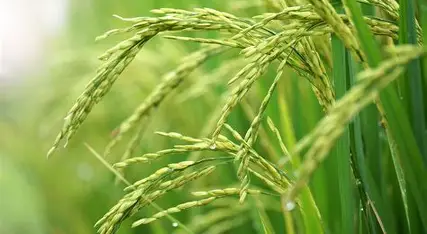
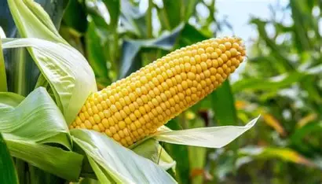

About Crops
This system helps farmers choose the right crop based on soil nutrients, climate, and rainfall.

Wheat
Wheat grows best in cool climates with moderate rainfall. It is a staple food worldwide.

Rice
Rice requires warm temperatures and abundant water. It is the primary food for billions of people.

Maize
Maize thrives in sunny climates with fertile soil. It is used for food, fodder, and biofuel.